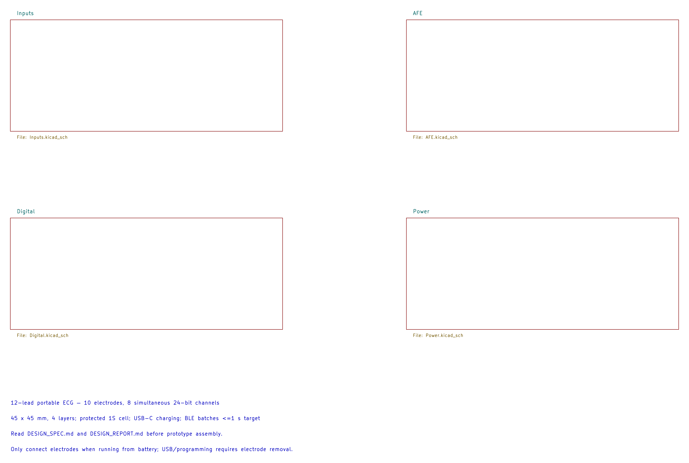
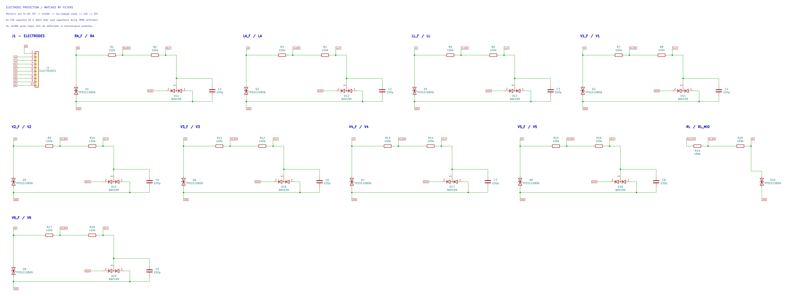
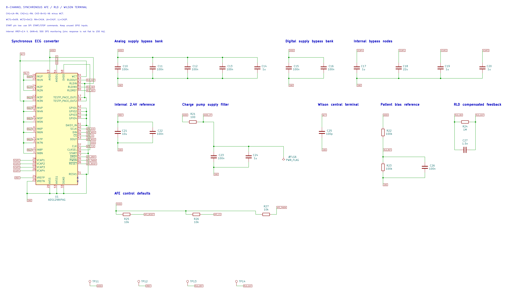
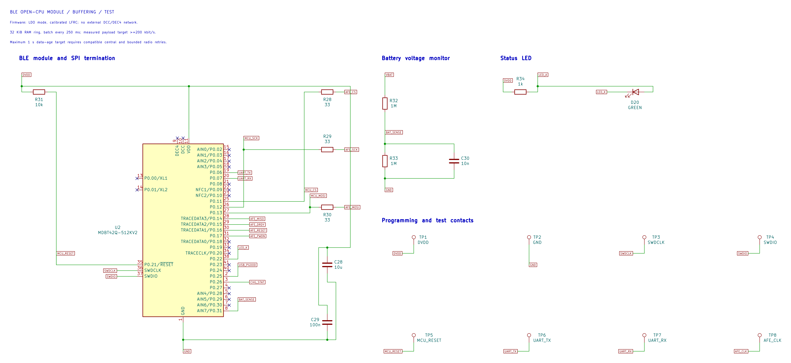
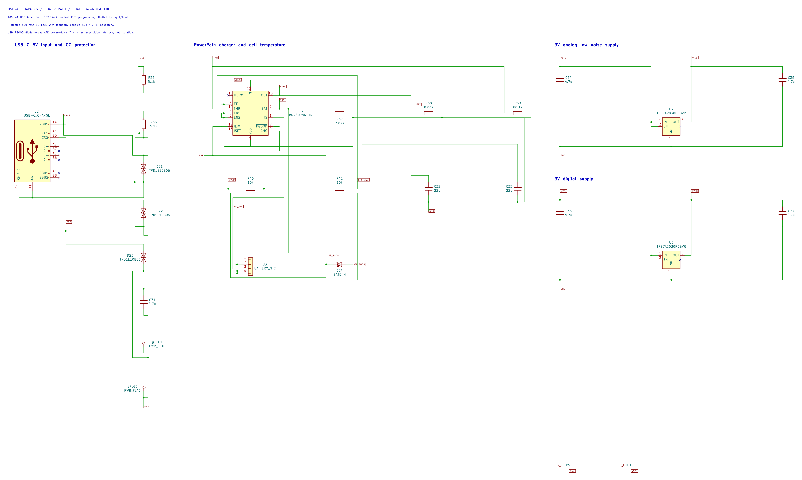

ECG12 Portable2 · 原理图图片
5 页均由当前 KiCad 原理图原生导出，300 dpi。阅读图裁去空白和图框，完整图纸另行保留；电气内容没有修改。
1. 系统总览
打开高清阅读图 · 打开完整图纸

2. 电极输入与保护
打开高清阅读图 · 打开完整图纸

3. ECG 模拟前端与 RLD
打开高清阅读图 · 打开完整图纸

4. 蓝牙与数字接口
打开高清阅读图 · 打开完整图纸

5. 电源与 USB-C 充电
打开高清阅读图 · 打开完整图纸
